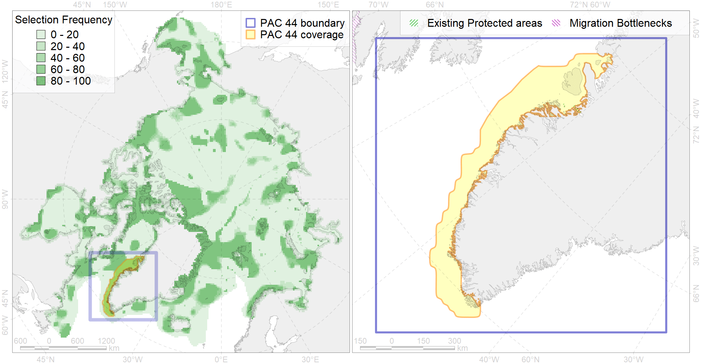

Region 44
Region 44
“ArcNet” scenario 33 achievement for region 44.
Use Accenter for advanced mode.

1
CFs inside of Region completely
25
CFs inside of Region at quarter
22
Complete-targets achievement by Region
46
Half-targets achievement by Region
| CF | Name | Target Achievement for Region | Proportion of Target Achievement in Region | Amount Proportion in Region |
|---|---|---|---|---|
| 7260 | 7260 I I I 4 1 1 2 | 142.9% | 100.0% | 100.0% |
| 5068 | Minke whale feeding areas in the Western Atlantic | 799.7% | 99.7% | 98.1% |
| 7259 | 7259 I I I 4 1 1 1 | 139.7% | 97.8% | 97.8% |
| 7152 | III.4.1. Southwest Greenland shelf | 693.2% | 97.7% | 85.1% |
| 5056 | Harbour porpoise summer feeding areas in West Greenland | 640.3% | 96.9% | 81.6% |
| 6019 | Long-tailed duck (Clangula hyemalis) Greenland wintering grounds | 95.1% | 94.7% | 80.0% |
| 7154 | III.4.1.2. SW Greenland glacial troughs | 468.4% | 81.0% | 79.1% |
| 5100 | White-beaked dolphin feeding area in the Western North Atlantic | 595.5% | 94.2% | 78.1% |
| 7153 | III.4.1.1. SW Greenland medium and low profile shelf | 657.0% | 93.4% | 77.4% |
| 5040 | Bowhead whale spring concentrations in the Baffin Bay | 95.3% | 94.8% | 69.2% |
| 6059 | Common eider (Somateria mollissima borealis) West Greenland wintering grounds | 97.5% | 96.3% | 69.1% |
| 3123 | polynya Greenland W | 562.1% | 93.9% | 68.0% |
| 6055 | Common eider (Somateria mollissima borealis) NE Canada wintering grounds | 84.4% | 84.1% | 58.5% |
| 6071 | King eider (Somateria spectabilis) Canadian moulting&migration stopovers | 93.8% | 74.4% | 47.4% |
| 3021 | Marginal Ice Zone distribution in April in the Baffin Bay LME | 379.8% | 58.5% | 46.4% |
| 7243 | Kelp forests of western Greenland | 143.2% | 86.6% | 46.1% |
| 5006 | Beluga of the Baffin Bay winter distribution | 87.8% | 44.9% | 42.5% |
| 6058 | Common eider (Somateria mollissima borealis) West Greenland breeding&moulting grounds | 56.8% | 56.5% | 41.4% |
| 7052 | cold corals of Canada and Western Greenland | 63.2% | 42.0% | 34.8% |
| 5060 | Humpback whale summer feeding areas in the Northwest Atlantic | 123.4% | 56.4% | 31.3% |
| 6072 | King eider (Somateria spectabilis) Canadian winetring grounds | 57.9% | 50.0% | 29.4% |
| 1003 | Atlantic Walrus Wintering Areas in Canada | 42.1% | 36.8% | 28.4% |
| 6018 | Long-tailed duck (Clangula hyemalis) Greenland moulting&migration stopovers | 33.8% | 33.7% | 26.7% |
| 2064 | Bearded seal concentration areas in Greenland | 108.3% | 30.3% | 26.0% |
| 6052 | Common eider (Somateria mollissima borealis) East Greenland breeding&moulting grounds | 36.3% | 36.1% | 25.2% |
| 5038 | Blue whale summer feeding areas in the Northwest Atlantic | 92.2% | 58.5% | 24.9% |
| 7155 | III.4.2. Southwest Greenland slope | 140.9% | 35.9% | 23.3% |
| 7240 | Kelp forests of southern Greenland | 130.0% | 76.6% | 21.3% |
| 5050 | Fin whale summer feeding areas in the Northwest Atlantic | 70.4% | 37.3% | 20.1% |
| 5078 | Narwhal Eclipse Sound stock winter core distribution | 25.6% | 24.9% | 18.8% |
| 5102 | Bottlenose whale summer feeding areas in the Northwest Atlantic | 111.4% | 36.7% | 18.3% |
| 2007 | Bearded seal whelping areas in the Baffin Bay | 67.4% | 23.5% | 16.7% |
| 6091 | 6091 Little auk breeding colonies of A. alle alle Greenland Canada | 32.8% | 23.4% | 16.1% |
| 4085 | Fish zoogeography, Arctic Region, Subarctic Transitional-Atlantic Province, Labrador – S Greenland District | 162.8% | 34.3% | 14.7% |
| 5115 | Narwhal wintering areas | 59.0% | 30.0% | 14.4% |
| 5104 | Bowhead whale Baffin population winter distribution | 50.3% | 24.9% | 12.2% |
| 4056 | Distribution of the American Plaice (Hippoglossoides platessoides) (F 47), European populations | 373.7% | 23.8% | 11.9% |
| 4048 | Feeding/nursery area of the ogac (Gadus ogac ) (F 41) | 91.5% | 22.8% | 11.6% |
| 6101 | 6101 Uriaalge aalge breeding colonies | 29.9% | 21.1% | 11.4% |
| 6029 | Glaucous gull (Larus hyperboreus euceretes) breeding grounds | 83.0% | 19.1% | 11.0% |
| 6041 | Ivory gull (Pagophila eburnea) postbreeding grounds in the Canadian Arctic | 46.0% | 17.9% | 10.2% |
| 4028 | Feeding/migration area of the Atlantic salmon (Salmo salar) American populations (F27) | 75.1% | 24.1% | 9.8% |
| 6034 | Ivory gull (Pagophila eburnea) Atlantic wintering grounds | 42.2% | 21.1% | 9.4% |
| 7150 | III.3.1.2. NW Greenland glacial troughs | 90.4% | 14.9% | 8.4% |
| 6015 | Black guillemot (Cepphus grylle mandti) breeding grounds | 56.8% | 12.2% | 7.3% |
| 4055 | Range of the Shorthorn Sculpin (Myoxocephalus scorpius) (F 46), American populations | 221.0% | 12.5% | 7.1% |
| 4032 | Range of the Arctic skate (Amblyraja hyperborea) (F2) | 202.4% | 15.5% | 6.5% |
| 7247 | seagrasses of the High Arctic | 20.8% | 11.5% | 6.2% |
| 7171 | VII.1. Greenland Sea and Fram Strait Basin basins VII.1.1. Rises (slope foot) | 31.5% | 26.2% | 6.1% |
| 7163 | III.6.2. Southwest Greenland slope | 36.9% | 16.0% | 6.0% |
| 6002 | Little Auk (Alle alle alle) winetring grounds | 23.0% | 15.9% | 6.0% |
| 5042 | Bowhead whale winter concentrations in the Baffin Bay | 11.9% | 8.1% | 5.7% |
| 6049 | Black-legged kittiwake (Rissa tridactyla tridactyla) wintering grounds | 16.2% | 16.2% | 5.6% |
| 2019 | Harbour seal range in the North Atlantic region | 78.3% | 11.9% | 5.1% |
| 4029 | Feeding area of the Arctic charr (Salvelinus alpinus), anadromous populations (F28) | 11.9% | 10.4% | 5.0% |
| 6031 | Little auk (Alle alle alle) breeding colonies in Greenland and Canada | 6.7% | 6.5% | 4.9% |
| 5103 | Bowhead whale Baffin population spring-autumn distribution | 19.6% | 10.7% | 4.9% |
| 4046 | Range of the Thorny Skate (Amblyraja radiata) (F 3) | 62.6% | 11.7% | 4.8% |
| 6106 | 6106 Urilomvilomvibreeding colonies | 9.4% | 6.9% | 4.8% |
| 7148 | III.3. 1. Northwest Greenland shelf | 38.1% | 9.4% | 4.6% |
| 6075 | Common murre (Uria aalge aalge) breeding grounds | 8.5% | 8.1% | 4.6% |
| 7161 | III.6.1.1. SE Greenland medium and low profile shelf | 35.7% | 9.8% | 4.6% |
| 7160 | III.6.1. Southeast Greenland shelf | 41.0% | 10.1% | 4.6% |
| 4059 | Range of the Greenland Halibut (Reinhardtius hippoglossoides) (F 49) | 135.6% | 11.4% | 4.3% |
| 4049 | Range of the Haddock (Melanogrammus aeglefinus) (F 42) | 65.7% | 10.5% | 4.2% |
| 7034 | North-western Greenland region | 18.2% | 11.1% | 4.2% |
| 4045 | Feeding/migration area of the Pink Salmon (Oncorhynchus gorbuscha), native distribution (F23) | 65.7% | 10.7% | 4.2% |
| 5112 | Arctic Cetaceans (beluga, bowhead, narwhal) winter habitats as predicterd by MIZ | 10.0% | 8.2% | 4.1% |
| 6083 | Thick-billed murre (Uria lomvia lomvia) wintering grounds | 15.1% | 10.6% | 3.9% |
| 4017 | Feeding/ migration area of the Greenland Shark (Somniosus microcephalus) (F1) | 15.5% | 9.1% | 3.6% |
| 6099 | 6099 Rissa tridactyla tridactyla breeding colonies | 5.1% | 5.1% | 3.5% |
| 4003 | Range of the Atlantic Capelin (Mallotus villosus) (F10) | 105.6% | 8.9% | 3.3% |
| 6023 | Atlantic puffin (Fratercula arctica naumanni) wintering grounds | 12.6% | 10.2% | 3.3% |
| 2044 | Ringed seal whelping areas in the Baffin Bay region | 13.2% | 6.4% | 3.2% |
| 4037 | Distribution of the Glacial cod (Arctogadus glacialis) (F34) | 32.5% | 7.8% | 3.1% |
| 9002 | polar bear of the BB (Baffin Bay) subpopulation distribution | 8.9% | 7.3% | 2.9% |
| 4053 | Range of the Fourhorn Sculpin (Myoxocephalus quadricornis) (F 45), Euro-Asian populations | 89.9% | 5.4% | 2.8% |
| 6076 | Common murre (Uria aalge aalge) wintering grounds | 13.0% | 7.0% | 2.7% |
| 1011 | Atlantic Walrus haulouts in Nunavut and West Greenland | 2.4% | 2.4% | 2.4% |
| 7149 | III.3.1.1. NW Greenland medium and low profile shelf | 16.6% | 4.1% | 2.0% |
| 1002 | Atlantic Walrus Summer Distribution in Canada | 5.9% | 4.0% | 2.0% |
| 3025 | Marginal Ice Zone distribution in April in the Greenland Sea LME | 4.2% | 4.0% | 1.6% |
| 7189 | VI.1.8. Seamounts | 1.3% | 1.3% | 1.3% |
| 4041 | Range of the Polar Cod (Boreogadus saida) (F35) | 10.1% | 3.9% | 1.3% |
| 4080 | Fish zoogeography, Deepsea Atlantic Region, North-Atlantic Abyssal Province (11A -Scandian, 11B - Central-Arctic and 11C - Baffin Deep-sea Districts ) | 16.2% | 2.9% | 1.3% |
| 6082 | Thick-billed murre (Uria lomvia lomvia) breeding colonies | 1.7% | 1.5% | 1.2% |
| 8040 | Greenland glacial termini | 3.7% | 3.0% | 1.2% |
| 6047 | Black-legged kittiwake (Rissa tridactyla pollicarius) breeding colonies | 1.0% | 0.8% | 0.7% |
| 5048 | Fin whale summer feeding areas in the East Greenland and West Iceland | 2.1% | 2.1% | 0.6% |
| 9005 | polar bear of the DS (Davis Strait) subpopulation distribution | 0.6% | 0.5% | 0.2% |
| 3034 | Marginal Ice Zone distribution in July in the Baffin Bay LME | 0.8% | 0.3% | 0.2% |
| 5071 | Narwhal Admiralty Inlet stock winter core distribution | 0.2% | 0.2% | 0.2% |
| 7146 | III.2.2.1. Archipelago slope in Baffin Bay and Lancaster Sound | 2.2% | 0.3% | 0.1% |
| 5098 | White-beaked dolphin feeding area in the Central North Atlantic | 1.2% | 0.4% | 0.1% |
| 9024 | polar bear denning areas of EG (East Greenland) subpopulation | 0.0% | 0.0% | 0.0% |
| 9006 | polar bear of the EG (East Greenland) subpopulation distribution | 0.1% | 0.0% | 0.0% |
| 2047 | Ringed seal whelping areas in Greenland region | 0.3% | 0.1% | 0.0% |
| 3036 | Marginal Ice Zone distribution in July in the Greenland Sea LME | 0.0% | 0.0% | 0.0% |